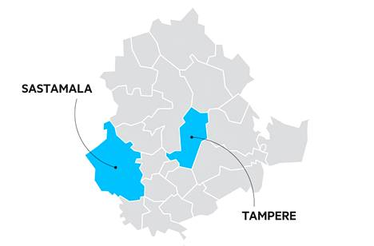

 Sastamala is a town and municipality in Pirkanmaa. It was created when the municipalities of Vammala, Äetsä and Mouhijärvi were consolidated into a signle town in 2009. Later Kiikoinen also joined the growing Sastamala in 2013.
The current name of Sastamala is actually a revival of the Medieval name of the area. The first mention of Sastamala was in the 1303 AD.
Sastamala's administrative center is Vammala, where almost half of the population lives. Rest of the municipality's population lives in rural areas and it's 161 villages.
Sastamala tour guide | Explore the nature | History of Sastamala